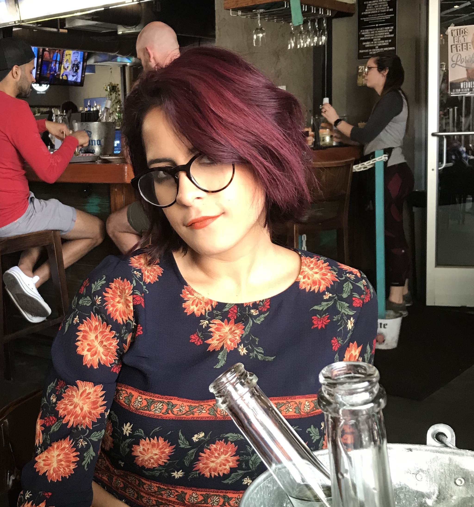

Been interested in computers since I was a tiny chubby kid. I would spend hours infront of a pc, my parents were not about
it. So everytime I got in trouble it would put in risk how much time I would spend on the computer. Graduated
from Computer Science on May 2017, so I guess all that "Stop using the computer so much" never really
got me. Now I wanna learn web development, so really, I wont be getting away of a computer anytime soon.
I ran out of what to say now, and I wanna fill up all this space so text wraps around my picture. I
will probably have to write a lot... hopefully not, right? Just a few more words and the text should
wrap around the image... Just a little bit more... YASSS, got it! Well, I hope whoever is reading this
has a nice day. :)